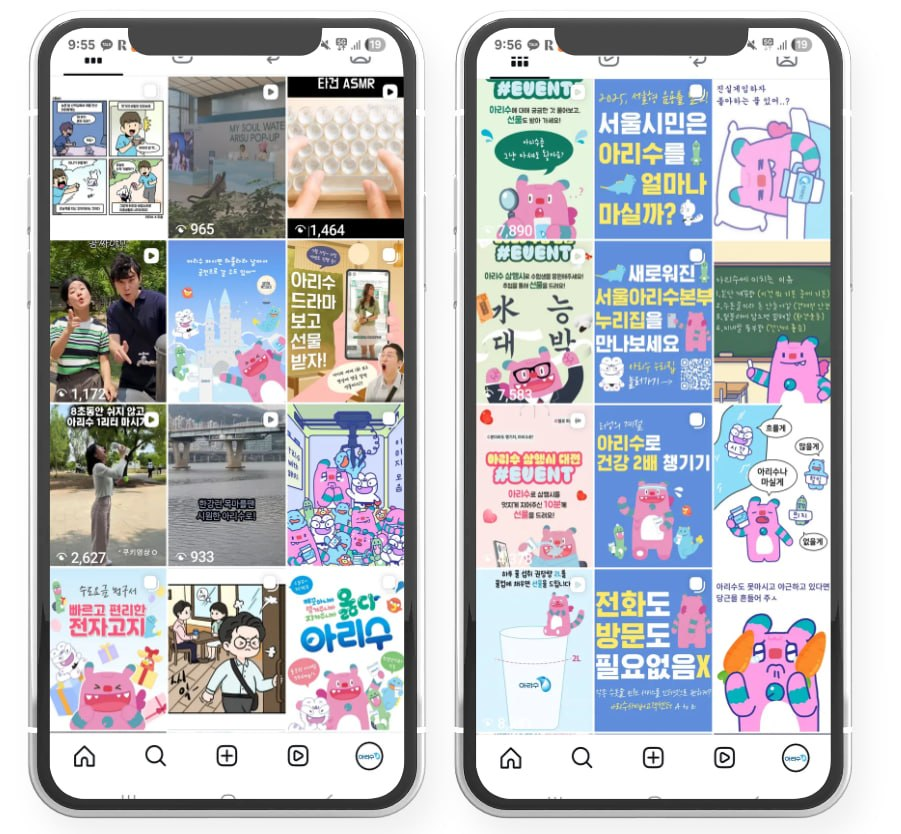
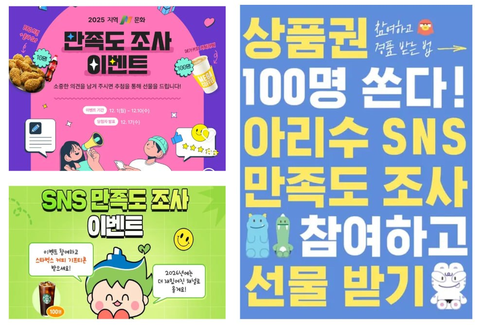
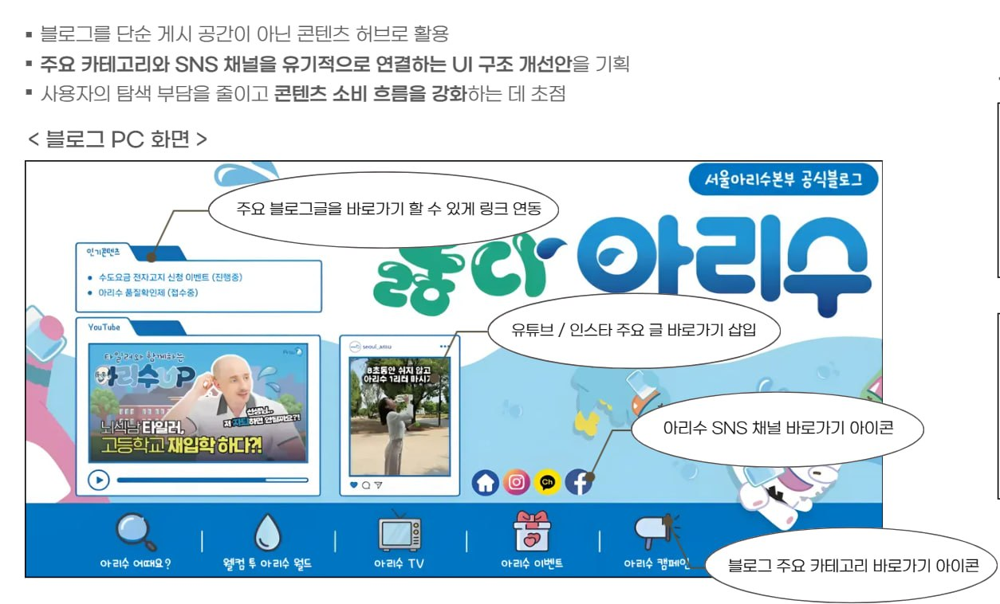

마케터이지만 SaaS를 직접 만들고, 그 안의 데이터를 분석합니다.
콘텐츠 마케팅 실무를 B2C · B2B · 공공기관에서 쌓았고,
직전 프로젝트에서는 신규 트위터 채널을 1주 만에 3,500 팔로워로 성장(오가닉, CAC ₩0)시켰습니다.
현재는 여성 ADHD 사용자를 위한 PWA를 풀스택으로 빌드해 2주 만에 유저 270명을 확보했고,
Firebase · 자체 분석 대시보드로 사용자 데이터를 측정하며 운영 중입니다.
Hanyang University
Similar LAB · KC2 · Smartdong (계약직 3건, 약 10개월)
컴퓨터 활용능력 1급 · TOEIC 930 · TOEIC Speaking AL (2023)
4채널 브랜드 환경 재정의로 음용 신뢰 구축
시민의 수돗물 음용 신뢰 구축이 목표인 공공 프로젝트.
위생적 의구심이 핵심 진입 장벽이었고, 단순 정보 전달로는 인식 전환이 일어나지 않는 상황.
4채널이 톤 · 레이아웃 제각각으로 운영되며 브랜드 환경 자체가 신뢰감을 깎고 있었음.
신뢰는 데이터의 양이 아니라 '환경'에서 형성된다.
비주얼이 흩어져 있으면 수질 정보를 아무리 쌓아도 안심으로 이어지지 않음.
정보 발화 주체를 기관에서 시민으로 이양했을 때 신뢰가 자발적으로 만들어진다는 가설.

Insight —정적 이미지 + 단순 응모형 → 사용자 창작 · 인터랙션 유도형으로 포맷 전환. 댓글 인터랙션이 약 10배 증가하며 오가닉 도달 확장 구조 확보.
예산은 20% 절감했지만 인터랙션(공감 · 댓글 · 공유) 총합은 524 → 2,318로 4.4배 증가. 인터랙션당 비용 ₩1,193 → ₩216으로 5.5배 효율 개선.


1 2 3 4———
———